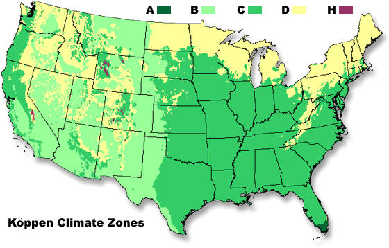
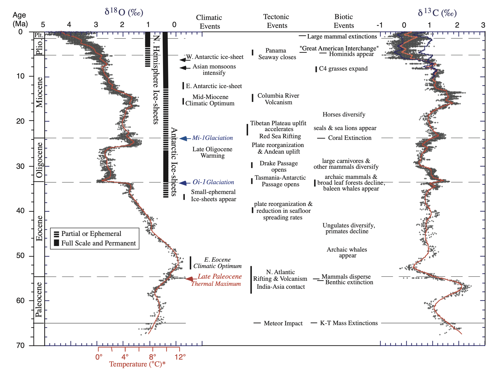

Global Climate Change
GEOS 3410
Graham H. Edwards
Disclaimer
Class sessions are recorded and available on Canvas to support your learning.

Week 1 Schedule
Tuesday
- Welcome/introduction
- IPCC reading, discussion
- Course overview
- Climate intro
Thursday
- Syllabus overview
- Climate, cont...
Outisde of class
- Complete (29 Aug): Onboarding survey on Canvas
- Complete (12 Sept): Quantitative skills practice set
This week's business
Syllabus
Please read the syllabus. If not for your own success in this course, then for Syllabus Trivia on Thursday.
If you never read the syllabus... (but please do!)
- Attend class (unless you should not or cannot)
- Drop-in hours – see me before you need me!
- Course schedule: 3 assessments, labs
- Please reach out if you are struggling.
Quantitative skills
- Complete practice packet
- Self-grade
- Meet with me (asar)
Skills packet
Laboratory 1: Climate science & data science
MMS 273 — Thursday 12:40–3:25 pm
- Bring a computer to lab (tablet unideal but ok)
- Complete pre-laboratory assignment before lab meeting
A little about me...
- Please call me "Graham"
- My pronouns are he/him
- I am a geochemist and cosmochemist
- I use analytical chemistry and numerical models to study…
- the histories of lakes and extinct ice sheets
- interaction between sediment/soil and water over long timescales
- the early evolution of the solar system
- I do not like driving
- I do like baking bread, biking, and long train rides
⚗️ Guiding framework ⚗️
Diving right in...
Intergovernmental Panel on Climate Change (IPCC)

Step 1: Collaborators
Your clustermates are your collaborators.
Introduce yourself and share these 4 pieces of information:
- Name, pronouns
- Year or major or both.
- Hometown (however you define it)
- Bird or frog?

Report back
🐸 & 🐦
Step 2: Reading Assessment Report 6 (AR6)
Synthesis Report: Summary for Policymakers
-
Read through the excerpt on your table and discuss the following questions with your collaborators:
- What did you read that was familiar?
- What did you read that was unfamiliar?
- What new question(s) do you have after this reading?
- How did reading this make you feel?
Be prepared to share your reflections
Report back

Course Overview
Two broad themes
- The Earth (climate) system:
physics & foundations - Earth's climate through time:
past → present → future


Theme 1
The Earth (climate) system: physics & foundations
Week 1
Climate (science) & why we care

Week 2
The Earth (climate) system

Week 3
(Astro)Physics of climate

Week 4
Energy budget & radiative forcing

Week 5
General (ocean and atmosphere) circulation

Week 6
Weather & teleconnections

Week 7
Midterm assessment on theme 1

Theme 2
Earth's climate through time

Week 7/8
The cryosphere

Week 8/9
Paleoclimatology – tools & techniques

Week 10
Earth's climate in deep time

Week 11
The Quaternary (2.58 Ma → now)

Week 12
Midterm assessment on theme 2
Week 13
Environmental responses to climate

Break
No Class
Week 14
Modern climate change in context

Application & evaluation
Practice & participation
Graded on completion
- Problem/practice sets
- In-class activities
- Comprehension checks
etc…
Assessments
Midterm I: in-class written exam (1 pg notes)
Midterm II: in-class written essay (open notes)
Final: oral exam
Laboratories
Complete assignments/write-ups due the following Friday, 8 days later.(unless otherwise specified)
Grading breakdown
| Total | 100% |
|---|---|
| Practice & participation | 30% |
| Laboratories | 40% |
| Assessments (10% each) | 30% |
What is climate (science)?
Why do we care?
Climate & Weather
Let's establish some working definitions
Climate & Weather
Weather
The state of the atmosphere, mainly with respect to its effects upon life and human activities.
American Meteorological Society

Climate & Weather
Climate
Climate in a narrow sense is usually defined as the average weather, or more rigorously as the statistical description in terms of the mean and variability of relevant quantities over a period of time ranging from months to thousands or millions of years. The classical period for averaging these variables is 30 years, as defined by the World Meteorological Organization (WMO). The relevant quantities are most often surface variables such as temperature, precipitation and wind.
Climate and weather processes exist along a continuum.

Scales of climate
- Geographic (space)
- Temporal (time)
Geographic scales of climate
Geographic zones
Roughly correlate with mean annual temperature

Regional climate zones
Köppen-Geiger climate classification system

| A | Tropical |
| B | Dry |
| C | Moist Subtropical Mid-Latitude |
| D | Moist Continental Mid-Latitude |
| E | Polar |
| H | Highland |
Global distribution of Köppen zones

Temporal scales of climate
Annual mean temperature

Decadal (10 yr) scale

Centennial (100 yr) scale

Millenial (1000 yr) scale

104 yr scale

105 – 106 yr scale
107 yr scale
108 yr scale

109 yr scale

Climate across time and space


{kind=link}
{kind=link}
{kind=link}
{kind=link}
{kind=link}
{kind=link}
{kind=link}